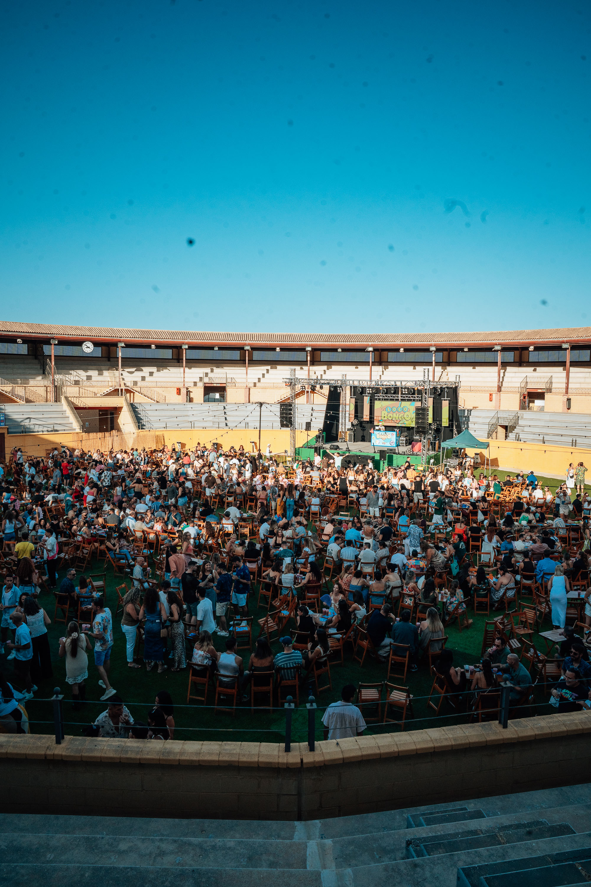

¿Vienes con la cuadrilla? Estos son los planazos de grupo de Plaza Paraíso en Torremolinos: tardeo, concursos y la fiesta más linda del mundo, al aire libre en la Plaza de Toros.
17 jun 20265 min de lecturaPlanes de grupo · Málaga
Planes de grupo al aire libre en la Plaza de Toros de Torremolinos
En resumen
¿Planes con amigos en Málaga? Plaza Paraíso reúne tres eventos perfectos para grupos en la Plaza de Toros de Torremolinos: Loco Bongo (el tardeo más loco), Furor The Show (concurso musical en directo) y Bresh (la fiesta más linda del mundo). Mesas reservadas, ofertas 4x3, food trucks y ambiente al aire libre. Compra las entradas online y por adelantado.
Las mejores actividades para grupos en Málaga este verano
Organizar un plan cuando sois muchos no siempre es fácil: hay que encontrar algo que guste a todo el mundo, que tenga buen ambiente y que se pueda reservar sin complicaciones. Este verano, en Torremolinos, lo tienes resuelto.
Si estás buscando actividades para grupos en Málaga, la Plaza de Toros de Torremolinos se convierte en el gran punto de encuentro del verano con Plaza Paraíso. Un espacio al aire libre, a un paso de la playa, pensado para venir con amigos, con la familia o con los compañeros de trabajo. Hemos seleccionado tres planazos de grupo que no fallan: Loco Bongo, Furor The Show y Bresh.
¿Por qué Plaza Paraíso es el plan de grupo perfecto?
Porque está todo pensado para disfrutar en compañía. El recinto cuenta con césped, zonas chill, food trucks y barras, así que entre actividad y actividad siempre hay un sitio donde sentarse, picar algo y seguir de charla. Además, varios eventos ofrecen mesas reservadas y ofertas para grupos (como las populares ofertas 4x3), ideales cuando venís en cuadrilla.
Y lo mejor: todo al aire libre, bajo el cielo de la Costa del Sol, con la comodidad de tenerlo todo en un mismo lugar. Sin desplazamientos, sin cuadrar mil planes distintos. Una sola entrada y una tarde redonda con los tuyos.
Los 3 planazos de grupo que no fallan
1. Loco Bongo: el tardeo más loco para venir con amigos

Loco Bongo, el tardeo de los sábados en la Plaza de Toros de Torremolinos.
Loco Bongo es el after-beach más loco de la Costa del Sol, todos los sábados del verano (y alguna fecha más) en la plaza. Música, bongos, risas y el mejor ambiente de Torremolinos: partidas de bongo, una tómbola y mil sorpresas para que no falte nunca un planazo con amigos.
Es, sin duda, uno de los mejores planes de grupo del verano: todo el recinto está cubierto de césped, puedes reservar mesa y aprovechar las ofertas 4x3, y dentro encontrarás puestos de comida y bebida durante toda la fiesta.
Furor The Show, el concurso musical en directo, en Plaza Paraíso.
Furor The Show es el concurso musical más mítico de la tele, ahora en directo y presentado por Alonso Caparrós. ¿Te sabes la canción? Demuéstralo: un show interactivo donde el público es el protagonista y la diversión está garantizada.
Es perfecto para grupos competitivos: dos equipos se enfrentan para demostrar quién tiene más arte sobre el escenario, con los mayores hits de los 80, 90, 2000s y actuales sonando sin pausa. Pruebas, DJs, risas y sorpresas para vivir el tardeo más espectacular de Torremolinos con tu gente.
Bresh, «la fiesta más linda del mundo», aterriza en Torremolinos para una de las tardes más esperadas del verano. Pelotas gigantes, ositos, confeti y los hits que no paran: Bresh es mucho más que una fiesta, es un fenómeno mundial que llena pistas en medio planeta y ahora llega a la Costa del Sol.
Con pop latino, reguetón y clásicos para no parar de bailar, es el cierre perfecto para una escapada de grupo. Avisa a la cuadrilla, preparad el outfit y vivid una de las grandes citas del verano en la Plaza de Toros.
Como cada año, los planes de grupo vuelan: la recomendación es comprar las entradas online y por adelantado, y consultar las opciones de mesas y ofertas para grupos en cada evento. Así aseguráis vuestro sitio y os despreocupáis del resto.
Durante todo el verano, el ruedo deja de ser una plaza para convertirse en un espacio idílico al aire libre, pensado al detalle para que cada tarde sea inolvidable.
Food trucksUna selección de food trucks con propuestas para todos los gustos, del picoteo informal a sabores de medio mundo.
Iluminación de veranoGuirnaldas, luces cálidas y ambiente nocturno que envuelven la plaza al caer la tarde.
Decoración temáticaUna ambientación cuidada al detalle que cambia con cada propuesta para sumergirte en el espíritu de cada evento.
Césped artificialZonas chill con césped para sentarte, relajarte y disfrutar del ambiente entre espectáculo y espectáculo.
Fuegos artificialesMomentos mágicos con espectáculos pirotécnicos que iluminan el cielo de la Costa del Sol.
Ambiente únicoBarras, zonas de encuentro y el mejor buen rollo para compartir, descubrir y repetir todo el verano.
Resuelve tus dudas
Preguntas frecuentes
¿Qué actividades para grupos hay en Málaga este verano?
Plaza Paraíso, en la Plaza de Toros de Torremolinos, reúne tres planazos de grupo: Loco Bongo (el tardeo más loco), Furor The Show (concurso musical en directo) y Bresh (la fiesta más linda del mundo), todos al aire libre.
¿Se pueden reservar mesas para grupos?
Sí. Varios eventos, como Loco Bongo, ofrecen mesas reservadas para grupos. Conviene reservar con antelación porque vuelan.
¿Hay ofertas para grupos?
Sí, como las populares ofertas 4x3 de Loco Bongo, pensadas para venir en cuadrilla. Consulta las condiciones en la página de cada evento.
¿Qué edad hay que tener?
Loco Bongo y Furor The Show son eventos +18. Revisa las condiciones concretas de cada evento antes de comprar.
¿Dónde se compran las entradas?
En plazaparaiso.com/entradas, online y por adelantado. Los planes de grupo suelen agotarse, así que conviene comprar con tiempo.
Nos vemos en la plaza
Vuestro plan de grupo os espera
Loco Bongo, Furor The Show y Bresh son solo el principio. Reunid a la cuadrilla, elegid fecha y aseguraos las entradas para el mejor verano en Torremolinos.